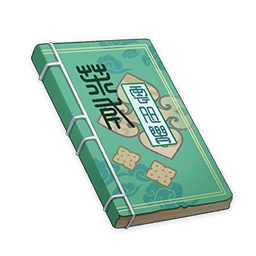

Records of Jueyun¶

Vol. 1 - Stone Beasts¶
Note
A collection of folk stories, myths, and legends from Liyue. It's quite a page turner. This segment is on the legends of stone beasts.
Stone statues appear all across the vast land of Liyue. Most were built by locals who prayed to them for favorable weather and peace steadfast as the mountains. But it is claimed that some have a much more ancient history.
One story regarding the animal statues in particular is popular among the fishermen of the Bishui River, the Silvergrass harvesters of Dihua Marsh, and the old mining crowd. They say that in some corners of the land, ancient stone beasts wake at night in the cool of the fall and look around at a world that has slowly become alien to them. Hearing the sounds of frogs and insects greeting them, they respond with deep, soulful cries from their petrified throats. Then they roam around Liyue, inspecting once more the land they used to protect.
To my knowledge, no one has ever witnessed a stone beast in motion firsthand. However, local residents who know the territory extremely well have long observed and accepted the phenomenon that the animal statues can change location and posture overnight. Meanwhile, light-sleeping campers often report hearing a sound in the middle of the night that is like flowing water, only much deeper in tone.
As for where these stone beasts originally came from, the elders of Qingce Village say they are illuminated beasts who once fought alongside Rex Lapis in the Archon War. After the war ended, the tide subsided and peace was restored. The illuminated beasts were no longer required to serve as defenders of the common people, and one by one they retreated to more secluded parts of the country. There they lived free from concern for mortal affairs.
But some illuminated beasts remembered with fondness the glorious days when they served under Rex Lapis, and they pined for the years when they protected Liyue. Though they were not of the mortal realm, nor were they immortal: For them, too, life would one day come to an end. Thus, they beseeched Rex Lapis to turn their ephemeral flesh bodies into everlasting stone. The merciful Geo Archon granted their request and made them as such.
Vol. 2 - Palace Beneath the Sea¶
Note
A collection of folk stories, myths, and legends from Liyue. It's quite a page-turner. This segment is on ancient fictional stories.
The day had arrived. It was time to collect the bride.
The Sea God looked majestic indeed as he sat center stage in his giant clam, holding in his hands the reins of two sea serpents. They stood as imposing as Mt. Tianheng before the royal carriage as their master accepted the gifts of pearls from the village elders and welcomed his new bride aboard the carriage. In return, the village would receive the Sea God's blessing: a year free from tempests and tsunamis.
The bride was whisked away to a place deep beneath the waves, far from home, far from the reveling crowds celebrating the festival, and far from her mother all alone. The Sea God took her along a corridor of great columns, formed from the skeleton of a dead whale, that led to a palatial gate adorned with shining pearls and iridescent shells. Finally, the young bride had arrived at the palace the Sea God had made for her. The palace that was to be her new home.
"It was not my plan to meddle in the affairs of common people," came the god's voice rippling through the water. It was a husband's attempt to console his bride.
"This place has served as a new home for many other young women, and it also became the place they spent their final days. Many of them were driven away from the village where they were born. For them, the ocean had provided safe refuge. Somewhere they could sleep peacefully without fear of being disturbed. Somewhere they could call home."
But this young woman did not want a new home decorated with prize pearls and rare shells. The dazzling spectacle of the ocean floor — and the creatures that she knew lurked in the darkness — filled her not with peace, but with dread. Time went by, and the longer she stayed in her bewildering ocean chamber that knew not sunrise nor sunset, the more homesick she grew — and the frailer she became.
Eventually, there came a day when the Sea God sensed what his young bride was feeling. Though saddened by her choice, he allowed her to go through with her decision.
"In the fallen world of the humans, there will come a day in your life when you regret this decision." The Sea God took the shell of a sea snail that adorned his waist and handed it to her as a parting gift.
"There will come a day that you blow into this shell, and it will sound like a horn. On that day, you shall return to this place."
The young woman took the shell and returned to the land. The years went by, and soon she became a mother herself. As she went about her simple, peaceful life, the ocean palace seemed but a childhood dream. The dazzling sights and grotesque creatures would once in a while flood into her mind from the murky depths of her memory, but it was a rare occurrence, and she put them out of her mind. She lived like this year after year. Until one year, when the festival came once again, the village elders came to her home. They had come to take her daughter from her arms. It was then that she finally understood why the Sea God had spoken of her regret, and of her return, all those years ago.
On the eve of the festival, she blew into the shell, and it sounded like a horn.
The Sea God responded to the call, rising up from the billowing waves to greet the village. But his embrace was a tidal wave that engulfed the village, and took the villagers and elders in their sleep. Drawn by giant sea serpents, a colossal clam carriage came to a halt in front of her, dazzling her with its shimmering pearls. The mother took her daughter by the hand and boarded the Sea God's clam. It was just like she remembered from her childhood — only this time, the village she left behind now lay in ruins beneath the ocean waves.
Vol. 3 - Wuwang¶
Note
A collection of folk stories, myths, and legends from Liyue. It's quite a page-turner. This segment is on the origin of Wuwang Hill.
Hiding between the jagged peaks in the north of Mt. Qingce is a slope known as Wuwang Hill, a palpably ominous place and the setting of many tales of supernatural phenomena. It is rumored by Liyue that the spirits of the dead lurk within the woods on Wuwang Hill. They roam the perimeter of the decrepit village, wandering among the withering trees and rotting foliage, eternally yearning for things left unresolved in living years. These floating spirits often entice unsuspecting passers-by away from the main path and onto treacherous mountain tracks that leads them tumbling into a river or straight into an ambush of ravenous monsters.
It is this phenomenon from which Wuwang Hill derives its name. Wuwang means "prudence" in the common tongue, and Wuwang Hill is said to be "the hill where the prudent are punished." For even those travelers who do not act rashly or impulsively on their journey are doomed to be ensnared by the malevolence that lingers here like the mist in the mountain air.
Both innocent villagers and ignorant visitors alike are susceptible to the deception of the Wuwang Hill spirits, which draw them deep into dark woods where thick mist blots out the sky and unknown dangers lurk in the shadows. There are many means by which these sinister spirits are able to deceive mortals. Some take the form of bereavement or grief, others of regret, manifesting as voices and visages of the deceased, the love of the departed, or the remorse of another party in an unresolved dispute. The traveler finds themselves compelled to heed the spirit's cry, and follows them into the depths of Wuwang.
But Wuwang Hill was not always this way. Some signs of life remained there up until relatively recently, and in times gone by the village at the foot of the slope enjoyed a peaceful and leisurely existence, the chimneys always smoking and the lanterns always lit. That same village stands abandoned today... The buildings are in ruins and all that remains of the villagers is the indistinct murmuring from a realm beyond.
There is a fable that is oft-repeated among the children of Qingce Village. It holds that the young people of Wuwang Hill, enchanted by the whale-like song of a faraway sea monster, all threw themselves into the gently flowing Bishui River in pursuit of false promises and childlike dreams. Along the river they floated, making their way to the Sea of Clouds, where they became one with the waves and lost all memory of the woods and their village on the hill... Their dreams, meanwhile, became the sea monster's song. Generation after generation of young people disappeared in this way, until in the end, the sole remaining residents of Wuwang Hill were old and gray. One by one, they left this mortal plane amidst sighs of grief. The bright lights of Liyue Harbor, Rex Lapis's pride and joy, burned ever brighter, while another neglected mountain village turned into a silent ghost town.
But unlike the fleeting and fickle human mind, the ever-flowing ley lines remember all. Surging elemental energy takes on spirit form to recreate all the dreams, both fair and foul, of Wuwang Hill's erstwhile residents. Much like a mother who once lost a child and now searches desperately through their irretrievable past for a way to bring everything back, the ley lines — albeit unconsciously — repeatedly recreate the past and those who inhabited it. The way each looked, the way each child cried, the way the elderly would sigh in their twilight years. Each moment of joy, and each moment of sorrow. And like the hypnotic song of the great creature of the deep sea, it unintentionally lures toward it any nostalgic soul who would dare trespass here.
Vol. 4 - Mountain Spirits¶
Note
A collection of folk stories, myths, and legends from Liyue. It's quite a page-turner. This segment features the stories of Seelie living in the mountains.
Many lone seelie are found floating in the mountain forests of Liyue. These glowing spirits are unfailingly found hovering in the mountain mist, in the ruins of ancient cities, or in crumbling, decrepit villages. Should a Vision-bearer draw near, the seelie will guide the way for them, leading them to long-hidden treasure or unfathomably ingenious mechanisms.
The people of Liyue believe these tiny, silent spirits to be auspicious sightings, the souls either of departed adepti or unnamed benevolent gods of old. Others believe they are the echoes of strangers without kin, lingering in the mountains to guide lonely, lost visitors onto the path back home.
Another old legend told in the mountain villages claims that there was once a time, before the adepti had come into being, when the seelie who meander in the mountains knew an altogether different existence, one in which they had beautiful physical forms and possessed great wisdom. That era, when the seelie roamed the mountains and strolled through the grand halls in the cities of old, is said to date back even further that the days when Rex Lapis fought bitterly against countless rival gods.
At a far-flung moment in the distant past, the ancestor of the seelie met a traveler from afar, with whom they swore an oath of union witnessed by the three sisters of the Lunar Palace. Just thirty days later, a sudden disaster struck. The seelie and their lover fled into exile as the world collapsed around them, fleeing until the terrible calamity caught up with and seized them. Their cruel punishment was to be separated from each other for eternity and to have their memories wiped without a trace.
The graceful but heartbroken seelie and the sisters grew more sullen and withdrawn with each passing day, to the point where their wondrous forms withered away, leaving fragments of their former selves scattered in the mountains and ruins, where they turned into tiny little life forms. They had forgotten so much, lost so much, and been stripped of their voices and wisdom, yet they continued to sing the same songs of grief. Because of this, still harboring a shred of the deep love they once had for their long-lost lover, they will act as guides to travelers who stop in the mountain mist, seeking to retrace their memories of an ancient story in long-abandoned ruins, disused makeup cabinets, and now-undecipherable poetry.
Of course, these are nothing but clumsy, incoherent folk tales, wild and fantastical conjecture about what Liyue may have been like in the distant past before the time of Rex Lapis. Needless to say, such tales have no credibility whatsoever. The true origin of these sorrowful spirits that meander in the mountains is, however, still widely debated, and no consensus has ever been reached on the topic.
Vol. 5 - Qilin¶
Note
A collection of folk stories, myths, and legends from Liyue. It's quite a page-turner. This segment is on the shared history of qilins and humans.
Among the legends that circulate in the mountains of Liyue, the qilin are a type of noble and benevolent illuminated beast. Qilin often roam the mountain forests, but appear only on nights where starlight shines upon clear dew. For sustenance, they drink only spring water and eat only fragrant herbs.
Qilin are gentle illuminated beasts, with grace and elegance flowing through their veins. It is said that qilin will never harm living things, refusing even to step on an insect or break a blade of grass. People believe that a qilin's characteristics, behavior, and their every movement is dictated by an age-old etiquette that has remained unchanged for a thousand years.
Following the barbarous age of the Archon War, many adepti became unable to continue living among the clamorous world of mortals. As a result, and under the direction of Rex Lapis, they withdrew themselves from society to live in seclusion in the bamboo groves and mountains. No longer would they interfere in the human world, content instead to enjoy a realm of mountains and water and pursue their own interests.
Yet some illuminated beasts there were that, over a thousand years of mortal cooperation, had cultivated deep friendships with ordinary humans. They decided to carry out the will of the Lord of Geo in the mortal realm, assisting human society with their adeptal powers and charity. Some hid in mountain hamlets, others walked the bustling city streets. They lived together and mixed with humankind, leaving behind unique bloodlines in Liyue Harbor.
According to one folktale, as early as several thousand years ago, there were already those among the elegant qilin who had begun to grow deeply attached to the savage mortals.
The tale tells of how in that barbaric era, the people wore clothes of water lotus and bay leaf.
One night, a herb gatherer was bathing in a mountain pool, when to his surprise, a passing qilin began to eat the clothes that he had left by the water's edge. The illuminated beast was too young to understand human notions of shame and privacy and had yet to learn the conduct of illuminated beasts in the mortal realm.
To make up for her crude behavior and to avoid startling the vulnerable mortal with her otherworldly adeptal appearance, she transformed into one of human bearing. As the pale light of the full moon fell onto the pool, she appeared before the herb gatherer.
The young illuminated beast ultimately did not understand human notions of shame and privacy. She stood in that mountain forest, lit by cold moonlight and the glow of fireflies, clothed only in dewdrops and the lunar gleam. Together with the ignorant mortal she traveled, strolling happily among flowers and bamboo groves, revealing to him the mountain dwelling of the adepti, interpreting for him the language of the birds, sleeping lightly amid the cry of insects, sinking softly into shared and ancient dreams...
As the herb gatherer began to stir at the first light of dawn, he awoke to find that the noble illuminated beast had vanished without a trace.
As for how this tale unfolds, opinions vary widely. Some people say that one night, the qilin placed a bamboo basket outside the front door of the herb gatherer's home, before disappearing into the moonlit mist. When the herb gatherer came to the door, he found a child soundly asleep inside the basket.
Others say that from that moment on the qilin lived together with the mortal, gave birth to children, and grew accustomed to human life.
No matter the truth of the thousand-year-old matter, the elegant illuminated beasts continue to walk among the residents of Liyue, unseen among the sea of people, waiting for the day when Rex Lapis calls them forth once again.
Vol. 6 - Hidden Jade¶
Note
A collection of folk stories, myths, and legends from Liyue. It's quite a page-turner. This segment is on the Dunyu Ruins.
In the valley northwest of Liyue Harbor and south of Nantianmen lie many silent, ancient ruins.
One of these areas is known as the Dunyu Ruins. This area is said to have already existed even before the time of the Archon Wars.
According to old legends passed by word of mouth, "Dunyu" means "the land to which beauteous jade flees."
In a past beyond memory, when even Rex Lapis would still have been young, a star fell from the sky into the barren plains west of Liyue. These plains were transformed into a huge and deep chasm in the wake of that star's descent, and jade would emerge from within, beautiful and limitless, and it would become the foundation for a thousand years of industrial mining in Liyue thereafter.
Legend has it that when that nameless star fell, a fragment of it broke off and crashed into the rocks in northern Lisha.
As most know, wordless stones harbored soul and spirit, and in manners and times not witnessed by mortal eyes they watched and listened to the ley lines' pulses, the echoes of the alpine springs, and the slow but inexorable movements of the mountains.
But unlike the ordinary but enduring stone of the earth, the fragments of the meteorite that fell from heaven had a proud and agitated temper.
Later, when countless gods and rulers fought over the appointed celestial seats, and the very stars and abyss themselves faded, tragedy and evil embarred the breath of the waters and mountains. The fallen star could bear this no longer, and heedless of the great chasm's persuasions to stay it leaped away, away towards the heavens.
As it returned to the skies, the heavenly jade left behind a deep pit, within which humans would build great cities and mighty fortresses, finding refuge and shutting themselves in with the leftover inheritance of that fallen star.
Over the tumult and storms of the next few thousand years, the redoubts of the Dunyu Valley stood tall and maintained prosperous relations with Liyue Harbor up till 500 years ago.
But with the coming of the black calamity and the rise of the Abyss, the residents of Dunyu sealed the ancient city and departed for other lands. None know why these refugees chose to shut the gates of their home, and even the millennia-old adepti and yaksha are silent on this matter.
And so, the sealed fortresses became giant, silent tombs, with naught left in them but the sound of pond water and the wind whistling through empty halls — and thusly, too, did they come to be called the "Dunyu Ruins" by the people of Liyue.